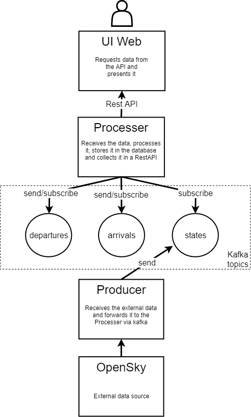
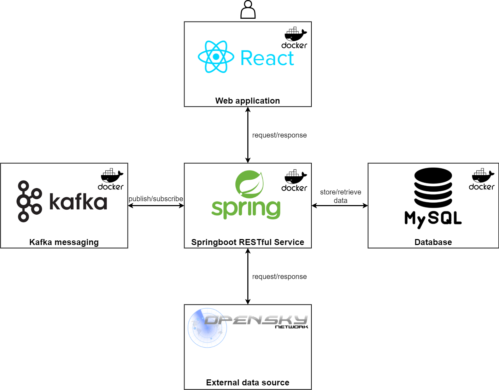

Introdução Última atualização: 29-06-2021
Bem vindo ao aeroporto internacional do Dubai!
Dubai Dash é o nosso sistema, cujo foco é o aeroporto do Dubai e todos os voos que passam no aeroporto ou no espaço aéreo do mesmo. O nosso objetivo é fornecer uma ferramenta de análise, em tempo real, dos voos que têm como destino ou ponto de partida o aeroporto, permitindo visualizar a sua posição e estatísticas do voo, e também aqueles voos que já aterraram, uma vez que estes fornecem informações bastante úteis, como por exemplo os países de origem mais populares.
O nosso sistema fornece um conjunto de dashboards que irá permitir ao utilizador recolher toda a informação necessária num só local, ao invés de ter de recorrer a vários. O acesso à informação mencionada anteriormente será realizada de forma direta e simplificada, permitindo ao utilizador visualizar, por um lado, os dados em tempo real, por outro, analisar dados estatísticos, recolhidos a partir do momento de inicialização do sistema até ao atual. O principal desafio do nosso sistema é ser capaz de recolher dados a partir da API Opensky e, através desta, processar e retornar informação ao nosso sistema, em tempo útil, permitindo ao utilizador, por exemplo, visualizar a posição e informação acerca dos voos.
A nossa visão
Dubai Dash, atualmente em desenvolvimento, tem como objetivo vir a ser um sistema que tem como principal foco a apresentação de uma diversa informação acerca do aeroporto internacional do Dubai e voos a ele associados, fornecendo diversas funcionalidades que permitam aos utilizadores visualizar informações relativas a voos em decurso, e também sobre aqueles que já terminaram, sendo derivada informação estatística a partir dos mesmos.
O sistema será composto principalmente por duas dashboards distintas, cada uma com o seu propósito. A dashboard principal será composta principalmente por um mapa interativo que permite ao utilizador visualizar os voos em decurso, a sua localização, e selecionar um voo específico para apresentar informação geral do mesmo. A dashboard secundária terá como objetivo apresentar dados estatísticos relativos aos voos.
Personas
António Monteiro, 70 anos, reformado
António Monteiro é um piloto comercial reformado que durante os seus anos no ativo se apaixonou pelo Dubai. Sendo este um dos aeroportos com maior afluência no mundo, o António gosta de passar o seu tempo livre a observar e absorver informação sobre os aviões que estão a sobrevoar a cidade e ao mesmo tempo recordar a cidade pela qual se apaixonou.Taaliah Allee, 30 anos, agente de viagens
Taaliah Allee é agente de uma agência de viagens do Dubai e está encarregue de criar pacotes de viagens para os destinos mais procurados na cidade. Através dos dados estatísticos do sistema acerca dos destinos com mais procura, consegue selecionar os países mais procurados e criar pacotes de acordo com as necessidades dos seus clientes.Cenários
- O António está no seu tempo livre e acede à dashboard. Aí, consegue visualizar num mapa, em tempo real, a posição dos aviões que estão a sobrevoar o Dubai. Por curiosidade, clica num dos aviões para obter mais informações detalhadas acerca do mesmo.
- Também o António, acede à dashboard mas agora para visualizar os dados da tabela de chegadas. O seu filho está a viajar para o Dubai e o António quer verificar que o seu voo já aterrou.
- A agência de viagens da Taaliah pretende fazer uma campanha de pacotes de viagens com vários descontos. De forma a ir de encontro às preferências dos viajantes, a Taaliah analisa as estatísticas referentes aos destinos mais populares para então criar pacotes com descontos para esses destinos.
Requisitos
Perspetiva do Produto
O foco deste produto é fornecer ao utilizador uma página web que fosse um género de Flightradar24 mas focado na área aérea do Dubai. Desta forma, permite ao utilizador ver os voos a sobrevoar essa área, obter informações desses voos, visualizar quais os voos a aterrar e a descolar. Além disso, fornece uma estatística sobre o país sobre o qual mais voos sobrevoam o Dubai.
Funcionalidades do Sistema
Estas funcionalidades foram desenvolvidas de forma a atender as necessidades dos utilizadores finais.
- Visualização num mapa, em tempo real, a posição dos voos que sobrevoam o Dubai.
- Fornecimento de informações detalhadas acerca de um determinado voo.
- Fornecimento de estatísticas acerca do país de origem mais popular.
- Notificação de um momento de aterragem/descolagem.
Interfaces de Software
O DubaiDash faz uso de várias tecnologias. No frontend existe uma aplicação web React. Já no backend temos duas aplicações Spring Boot, uma base de dados MySQL, e Kafka para transportar dados entre as duas aplicações Spring Boot. Uma das aplicações tem como objetivo obter os dados da OpenSky API REST e enviá-los para um tópico. A outra aplicação processa, guarda na base de dados e expõe os dados através de uma REST API para a aplicação web poder usá-los.
Interfaces de Comunicação
Como o DubaiDash é uma aplicação web, a sua interface de comunicação foca-se sobre o protocolo HTTP.
Requisitos de Qualidade
Nesta secção encontram-se os requisitos de qualidade associados ao sistema desenvolvido.
Requisitos de Usabilidade
| USE-1 | O sistema deverá permitir a visualizar em tempo real a localização dos aviões. |
|---|---|
| USE-2 | O layout da página deverá permitir ao utilizador navegar na mesma de forma rápida e intuitiva. |
Requisitos de Perfomance
| PER-1 | A informação dos voos na página deve ter no máximo um atraso de 30 segundos em relação ao que está disponível na API OpenSky. |
|---|
Requisitos de Disponibilidade
| DSP-1 | As funcionalidades disponibilizadas no sistema deverão estar disponíveis pelo menos 89% do tempo. |
|---|
Arquitetura
Arquitetura de microsserviços

Arquitetura de tecnologias

Developer
Inicialmente, após o processo de levantamento de requisitos e da escolha de uma arquitetura adequada aos mesmos, foi necessário proceder à escolha das ferramentas a serem utilizadas. A nível de backend foi optado implementar o sistema usando a plataforma Spring Boot, dado que permite criar a base do projeto de forma rápida e eficiente. Para além disso, dado que já tinha sido adquirida experiência nesta framework no desenvolvimento do Lab Project acabou também por ser um fator significativo, dado que poderia ser facilmente adaptado, permitindo avançar mais rápido nesta fase do trabalho.
Relativamente ao frontend, foi escolhido o ReactJS, dado que no contexto da aplicação é importante ter uma rápida atualização dos aviões apresentados no website, como o ReactJS permite atualizar componentes individualmente, de forma rápida, eficiente e leve, dado que não são necessários muitos recursos. Estes componentes permitem desenvolver módulos em paralelo e facilitam o desenvolvimento do website, pois é possível renderizar código HTML. Para além de todos os benefícios que encontrámos, o facto de ser uma das web frameworks mais utilizadas também teve grande peso nesta decisão.
Tal como já referido anteriormente, o sistema foi desenvolvido através do uso da plataforma Spring Boot, no entanto, ao longo de todo o desenvolvimento do sistema, com o intuito de implementar as suas diversas funcionalidades, foram usadas diversas outras ferramentas, entre as quais, por um lado, se destacam, o Docker, Docker Registry, Artifactory e Jenkins, que auxiliam o processo de automatização de testes e deployment do sistema. Por outro lado, o uso da plataforma Kafka permite que os diversos componentes do sistema comuniquem entre si de forma rápida, através de mensagens que são utilizadas para, por exemplo, para informar os aviões que estão a chegar ou a partir.
Para além das ferramentas acima enumeradas, apesar de não estar relacionado com o runtime, o logstash é também de elevada importância. O seu uso permite uma melhor gestão dos logs, facilitando o processo de verificação e validação do estado do sistema.
De seguida apresentam-se os nomes e portas que se encontram associadas a algumas das ferramentas enumeradas, bem como as portas associadas a alguns dos microsserviços que compõem o sistema, de notar que alguns recursos são partilhados entre os diversos grupos como a base de dados, zookeeper, kafka, elasticsearch e kibana.
| Microserviço dubaidash | 192.168.160.87:20003 |
|---|---|
| Microserviço dubaidashapi | 192.168.160.87:20004 |
| Frontend | 192.168.160.87:20005 |
| Base de dados MySQL | 192.168.160.18:3306 |
| Kafka | 192.168.160.18:9092 |
| Elastic Search - Kibana | 192.168.160.18:9200 |
| Docker registry | 192.168.160.48:5000 |
| Logstash | 192.168.160.87:20007 |
| Jenkins | 192.168.160.20:9090 |
| Artifactory | 192.168.160.49:8082 |
Testes
Para os testes unitários, foram desenvolvidas aplicações de teste, para os diferentes componentes, utilizando JUnit, com a anotação @Test para os declarar. Para o componente do Producer, a aplicação de teste fica encarregue de verificar se a comunicação com a API do Opensky e envio dos dados são, individualmente, bem sucedidos.
Já para o componente do Processer, verificamos se os dados recebidos estão bem estruturados e não são inválidos, como: voos repetidos; partidas/chegadas maiores que o número total de voos; verificar se a velocidade do avião é válida; bem como confirmar que as partidas vêm do aeroporto dos Emirados Árabes Unidos e que as chegadas não provêm desse mesmo aeroporto. Além disso, também fazemos testes para verificar o bom funcionamento do módulo da base de dados, tanto individualmente como integrado no sistema.
Para testarmos a integração do sistema e os seus casos de uso, seguimos uma abordagem Behavior Driven Development (BDD), recorrendo à ferramenta de software Cucumber. Os casos de uso que decidimos avaliar, foram os seguintes: observar o país mais popular; observar as chegadas; observar os voos no mapa, ou seja, foram de encontro aos cenários apresentados anteriormente. Estes casos de uso, permitiram-nos testar a invocação de eventos, o processamento dos dados e a visualização de imagem por parte do utilizador. Para testar o envio de mensagens, recorremos à utilização da biblioteca de Embedded Kafka, que nos permite executar uma instância de um servidor kafka, sem dependermos de um servidor externo que possa comprometer os testes, pois podemos não ter controlo sobre o mesmo.
Dadas as limitações de compatibilidade entre o JUnit 5 e o Cucumber, não é possível correr os dois tipos de testes em simultâneo. Por default, o comando mvn test irá correr todos os testes, exceto os de Cucumber. Para correr os de Cucumber, é preciso excluir o módulo “junit-jupiter-engine” do módulo “spring-boot-starter-test”.
Operações
No contexto das operações do sistema, o Jenkins foi fundamental no processo de desenvolvimento, dado que permite efetuar continuous integration, e além disso permitiu ainda fazer o deployment automático para um ambiente de produção. O pipeline desenvolvido está dividido em cinco stages genéricos: ‘Cloning repository’, ‘Testing’, ‘Build’, ‘Build and deploy images to registry’ e ‘Remote SSH’. Cada um destes stages usa diferentes comandos, associados à função pretendida na stage, estas funções são apresentadas de seguida:
- Cloning repository: este passo efetua o clone do repositório com o código fonte;
- Testing: cada um dos microsserviços é testado e uma vez que ambos foram desenvolvidos em SpringBoot com maven, é executado o comando mvn test.
- Build: como o nome indica é feito o build de cada microsserviço garantindo que não existem erros durante o mesmo, visto que os testes foram efetuados no stage anterior não é necessário voltar a efetuá-los, além disso é importante referir que o artefato resultante é colocado no artifactory. Isto é possível através do comando mvn deploy -DskipTests.
- Build and deploy images to registry: nesta fase é utilizado o docker, cada um dos microsserviços tem um Dockerfile associado que faz um multi-stage build para manter no mínimo o espaço ocupado pelas imagens. Após o build ser efetuado o docker registry é utilizado para guardar imagens noutro local, isto permite uma melhor gestão de recursos, além de fornecer uma solução mais elegante. Resumindo, aqui é feito o build da imagem docker e push para registry de cada microserviço.
- Remote SSH: este último passo efetua o deploy dos microsserviços na máquina playground. Através do comando sshagent é efetuada a ligação à máquina e, inicialmente, são removidas as imagens antigas. De seguida, é efetuado o pull das imagens do registry e inicialização dos containers. Para isto é necessário colocar os ficheiros e diretórios necessários para os containers e o ficheiro docker-compose.yml através do comando scp(secure copy). A utilização de docker compose permite simplificar a inicialização de containers, sendo necessário apenas uma linha para correr todos os containers